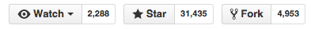
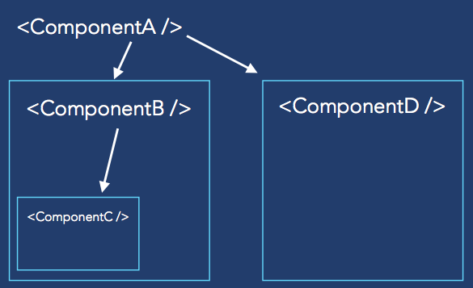
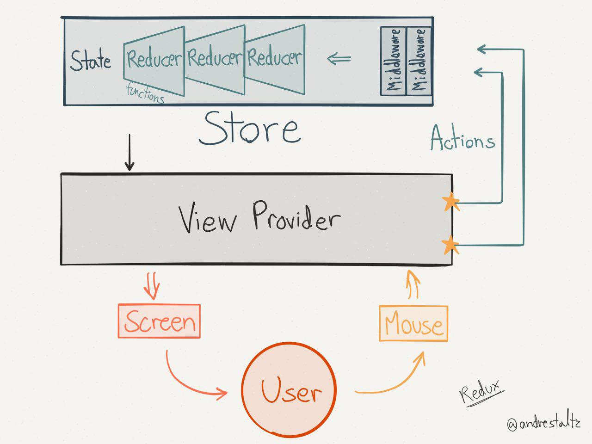

React.js
A JAVASCRIPT LIBRARY
FOR BUILDING USER INTERFACES
Created by Facebook
Cosa fa di preciso?
Mantiene l'interfaccia dell'applicazione aggiornata ad ogni cambiamento dei dati
MVC
Community pazzesca
- Netflix
- AirBnB
- Atlassian
- BBC
- Imgur
- Khan Academy
- Pivotal Tracker
- Wired
- Yahoo ...
Punti chiave
- Components (+ JSX)
- Virtual DOM
- One-way data binding
1. Components
Ogni cosa in React è un componente isolato e riusabile.
Un componente è una classe React.
Può accettare parametri in ingresso e avere uno stato e in più è possibile:
- Definire metodi
- Renderizzare HTML con il metodo Render (sempre obbligatorio)
Properties
Le properties sono le opzioni/configurazioni di un componente, vengono passate dal padre e sono immutabili.
State
Lo stato dovrebbe contenere dati che vengono modificati dagli handlers (i.e. User interactions, Server responses etc.)
setState(data, callback)
Da ricordare però che lo stato è opzionale e va evitato il più possibile per evitare di complicare le cose.
Eventi
Serie di eventi builtin.
Tutti cross-browser:
Clipboard, Keyboard, Focus, Form, Mouse, Touch, UI, Wheel
2. Virtual DOM
React usa una sua rappresentazione interna del DOM
e va a modificare il DOM reale usando un algoritmo di differenza ad albero più uno euristico O(n^3) => O(n)
Tradotto: potete anche ricaricare l'intera app a FE senza preoccuparvi delle performance
2. Virtual DOM
E' molto veloce perchè viene eseguito tutto in JS prima di effettuare le modifiche al dom che sono molto lente
3. One-way Data Binding
I dati (tramite le props) vengono passati solo in un verso. Dal padre ai figli.
React power
Ci fa scrivere del codice organizzato in componenti, mantenendo il codice di ognuno in un unico punto e ad avere performance pazzesche nell'aggiornare il FE.
Per applicazioni complesse però può non essere abbastanza e qui entrano in gioco Flux e Redux.
DEMO TIME
FLUX & REDUX
Sono delle architetture che ci aiutano a costruire applicazioni complesse e sono complementari a React.
Sono più un pattern che un framework.
Flux

Flux

Flux

Redux
Simile a Flux, ma con alcune differenze
-
Unique source of truth.
Lo stato dell'intera applicazione è memorizzato in un oggetto all'interno di un singolo store -
Lo stato è read-only
L'unico modo di modificare lo stato è emettere un'action, ovvero un oggetto che descrive ciò che è successo -
Mutations are written as pure functions
To specify how the state tree is transformed by actions, you write pure reducers -
Struttura dati immutabile
Ogni volta che viene fatta una modifica al model, ne viene creata una copia
REDUX
REDUX - TIME TRAVEL DEBUGGER